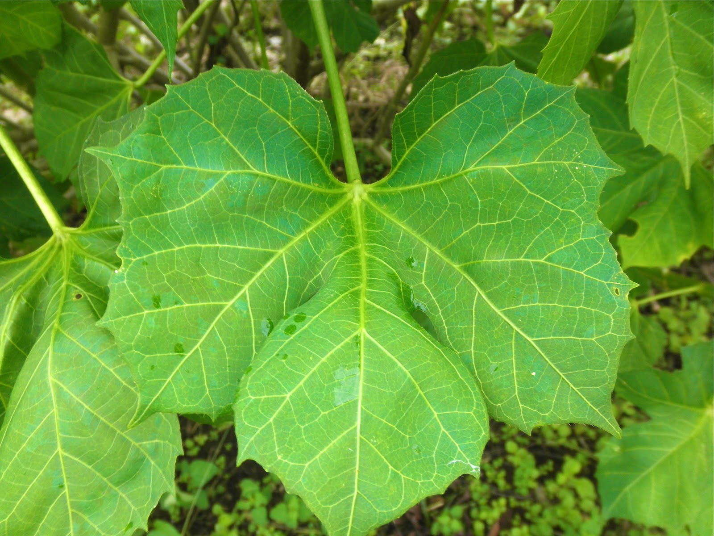
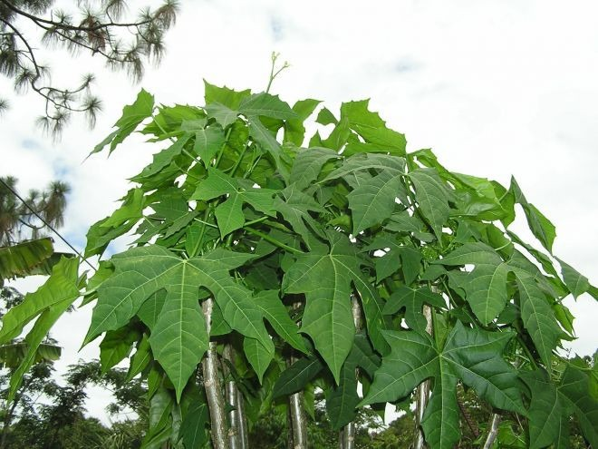
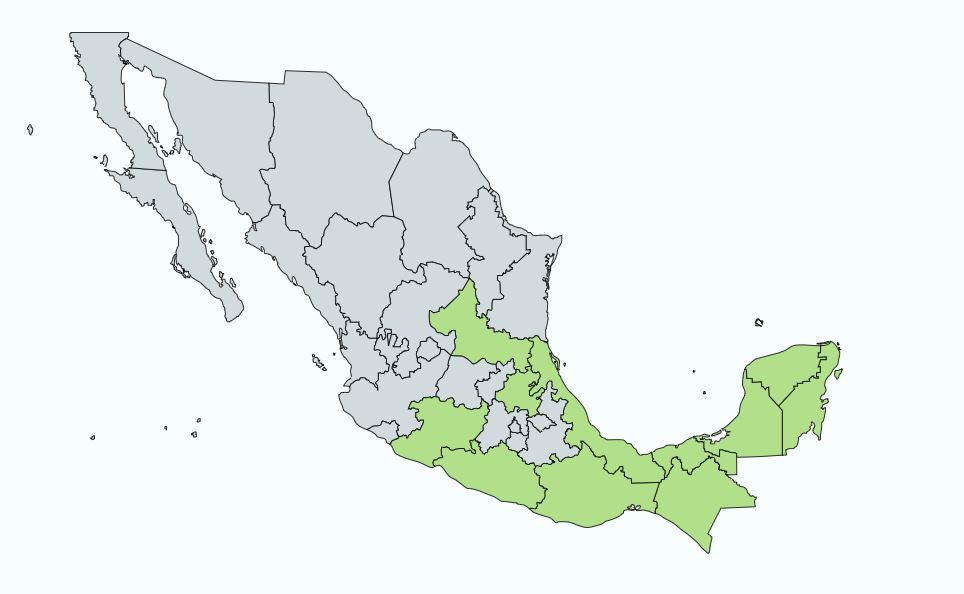

Descripcion:
Es un arbusto herbáceo, que pertenece a la familia de las Euforbiáceas, alcanza una altura de 2 a 3 m, presenta hojas largas,
pecioladas, e inflorescencia blanca. Esta planta esta asociada con la cultura maya, pues era consumida en mezcla con maíz y semillas de calabaza,
simulando a un tamal; el propósito era lograr el equilibrio nutricional a través de este alimento medicinal. Vale destacar que por varios siglos,
constituyó la fórmula magistral para la alimentación maya.
Usos Medicinales:
Beneficios de la chaya:
- Mejora la circulación sanguínea.
- Ayuda a desinflamar venas y hemorroides.
- Puede reducir los niveles de colesterol.
- Promueve unos huesos saludables.
- Puede ayudar a controlar el ácido úrico.
La infusión de las hojas de chaya es muy utilizada para:
- Facilitar la digestión, y combate el estreñimiento.
- Previene la tos, descongestiona
- Combate la artritis y la diabetes.
- Previene la anemia.
- Por ser un gran diurético.

Contra-indicaciones:

Lugares en donde se puede encontrar:
Princiapales Lugares:
Yucatán
Campeche
Quintana Roo
Veracruz
Otros...